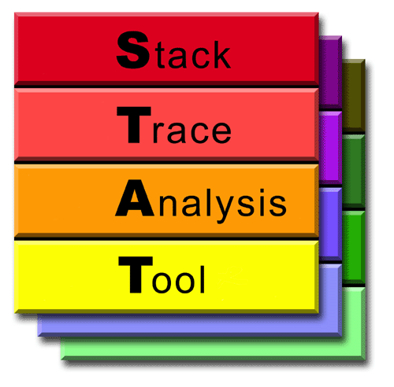

STAT: Stack Trace Analysis Tool¶


- Disclaimer
- Introduction
- Overview
- Installing STAT
- Using the stat-cl Command
- Using the stat-view GUI
- Using the stat-gui GUI
- Setting STAT Preferences and Options
- Prescription-Based Debugging With Prototype DySectAPI
- Tips and Tricks Using STAT
- Using the stat-bench Emulator
- Using the stat-script Python Interface
- Troubleshooting Guide
- Changelog
- Bibliography